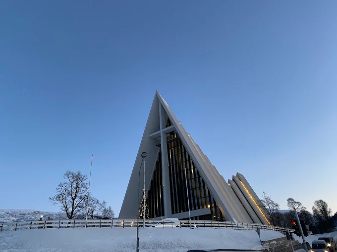
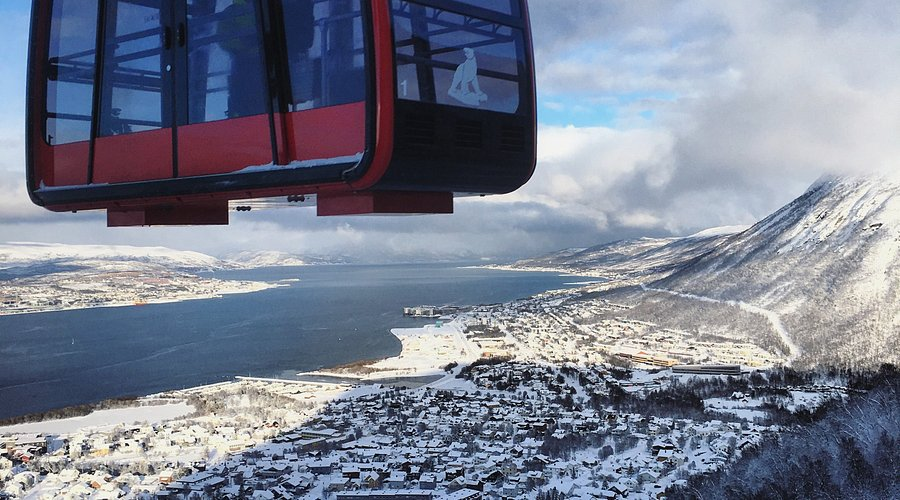

Tromsø
Tromsø(a pronúncia é “trumsa”) é uma comuna ao norte da Noruega e é considerada a cidade mais ao norte do mundo com população acima de 50.000 pessoas (há vilas menores ainda mais ao norte, algumas com só duas pessoas!). É uma cidade universitária com muita gente jovem de todas as partes do mundo, e um dos melhores lugares no mundo para ver a aurora boreal (ou começar sua jornada para vê-las).
Características
- Localização Ártica: Situada a 350 km ao norte do Círculo Polar Ártico, é uma das cidades mais setentrionais do mundo.
- Clima Extremo: Marcada por dois fenômenos principais: a Noite Polar (2 meses de escuridão total no inverno) e o Sol da Meia-Noite (2 meses de sol ininterrupto no verão).
- Hub Científico: Abriga a universidade mais ao norte do planeta, sendo um centro global de estudos sobre o clima e a aurora boreal.
- Vibe Cosmopolita: Apesar de isolada, é conhecida como a "Paris do Norte" por sua vida noturna agitada, gastronomia de alta qualidade e cafés charmosos.
- Porto Histórico: Ponto de partida histórico para as grandes expedições polares de exploradores como Roald Amundsen.
Pontos Turísticos
Arctic Cathedral(Catedral Ártica)
A Catedral Ártica é, sem dúvida, o marco mais famoso de Tromsø. Inaugurada em 1965, sua arquitetura arrojada composta por 11 painéis de concreto revestidos de alumínio foi inspirada nas formações de gelo e nas paisagens polares. Além de sua forma triangular única que domina a paisagem da cidade, a igreja abriga um dos maiores mosaicos de vidro da Europa em sua fachada leste, filtrando a luz de forma espetacular.
A Catedral do Ártico é uma das atrações turísticas mais famosas da cidade. O impressionante edifício é impossível de não notar do outro lado da água, em frente ao centro da cidade. Graças ao seu design único, é uma das igrejas mais famosas da Noruega .

Inaugurada em 1965, é famosa por seu design inspirado em geleiras.
Visite o site lifeinnorway para ter até as visôes internas da Catedral
O Teleférico Fjellheisen
A estação inferior está localizada perto do nível do mar em Tromsdalen , um subúrbio no continente. A estação superior fica em Storsteinen (em português: A grande rocha ), um afloramento rochoso a cerca de 420 metros acima do nível do mar. A viagem de quatro minutos até a estação superior é um destino popular, oferecendo aos visitantes uma vista panorâmica da cidade, das ilhas e dos fiordes circundantes a partir de um mirante ao ar livre. Comidas e bebidas são servidas no restaurante Fjellstua. Muitos passageiros usam o teleférico como ponto de partida para caminhadas até várias montanhas da região, incluindo Tromsdalstinden . Este pico icônico de 1.238 metros de altura é facilmente visível da cidade.
Para quem busca a melhor vista da região, o Teleférico Fjellheisen é parada obrigatória. Ele transporta os visitantes até o topo da montanha Storsteinen, a 421 metros acima do nível do mar. Em apenas quatro minutos de subida, revela-se um panorama deslumbrante da ilha de Tromsø, dos fiordes circundantes e das montanhas nevadas. É o local perfeito para observar o Sol da Meia-Noite no verão ou o brilho das luzes da cidade no inverno.

O teleférico Fjellheisen conectando a cidade ao topo da montanha Storsteinen.
Conheça o site oficial de Fjellheisen
A Aurora Boreal (Northern Lights)
Tromsø está situada bem no centro da "zona da aurora", tornando-a um dos melhores lugares do planeta para presenciar a Aurora Boreal. Esse fenômeno natural, causado pela colisão de partículas solares com a atmosfera terrestre, pinta o céu noturno com cortinas de luz verde, violeta e rosa. Entre os meses de setembro e março, caçadores de aurora do mundo todo visitam a cidade para testemunhar esse espetáculo mágico que transforma a noite ártica em um cenário de outro mundo.
Você sabia que a região de Tromsø é um dos melhores lugares do mundo para observar a Aurora Boreal, talvez até o melhor lugar de todos? Isso se deve à nossa localização geográfica, diretamente abaixo do oval da Aurora Boreal. Frequentemente, testemunhamos esse majestoso espetáculo de luzes da Mãe Natureza aqui no norte.
Lembre-se que a Aurora Boreal é um fenômeno natural, portanto, nunca há garantias. No entanto, um bom planejamento, conhecimento recém-adquirido, roupas quentes e uma dose de paciência aumentam suas chances de sucesso na busca pela Aurora Boreal.

A parte mais linda de Tromsø, A mágica Aurora Boreal dançando sobre os fiordes.
Veja mais fotos magníficas no site enjoythearctic